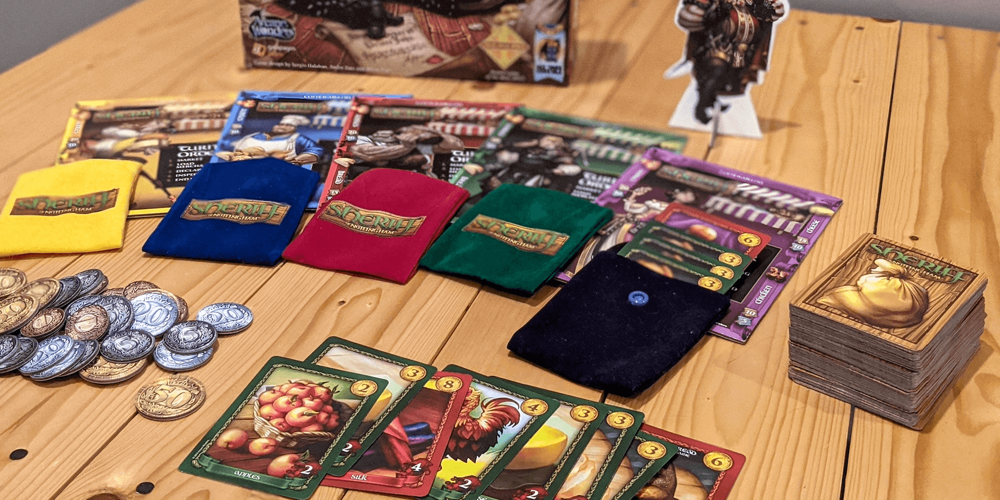
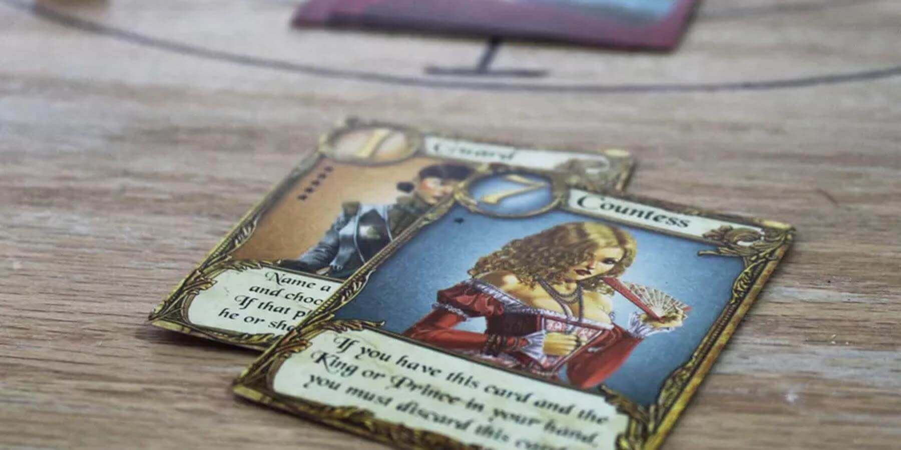
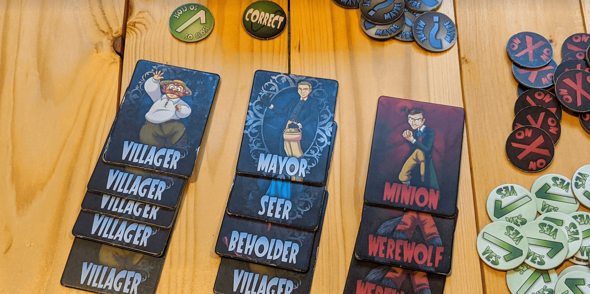

3 Deception Games like Coup that You Need to Try


Coup is an awesome bluffing game that has simple rules and usually ends in laughter. Every turn, you need the willpower to keep it together while lying to everyone at the table about your secret roles. "That's funny, I am...also the Duke..."
We've picked 3 great games that will give you a similar experience if you're looking for something new.
Sherrif of Nottingham

You may need an even better poker face for this one! Sheriff of Nottingham is another bluffing game that combines strategy with tons of laughter. Each round, one player acts as the sheriff while the others load up their bags with goods. Players may add any combination of legal goods or contraband, but must declare only legal goods to the sheriff! It goes something like this:
Sheriff: "Alright Sam, what's in the bag?"
Sam: "Uhhh. Five chickens."
Sheriff: "No way" *pops open bag, smiling*
Sheriff: *Finds five chickens* "NOOOOOO"
Legal goods like apples, bread, cheese, or chickens are worth low points, but they can be safely added to your bag. Contraband is worth many more points, but it will be confiscated if the sheriff chooses to open your bag and finds any!
If you love Coup but want a longer game with a more involved scoring system, Sheriff is a great option. This game takes more time to play, but nobody can be eliminated like they can in Coup. It's also harder to tell exactly who is in the lead in Sheriff, which adds to the mind games and strategy.
Buy Love Letter on Amazon
Love Letter
Love Letter is a deception game similar to Coup, but you won't be lying about which cards you have. This game still requires a poker face, and the fact that you can't bluff means the strategy is more about which cards you play and which opponent you use them on.
You'll play one of 2 cards in your hand on your turn, and each has a number and ability. The King (6) lets you trade hands with an opponent, the Handmaid (4) lets you avoid negative effects, and the Priest (2) lets you peek at another player's hand. Your goal is to have the highest-numbered card at the end of a round (to deliver a love letter to the princess), and if you do this enough times, you win!
Some cards make this tricky though. The Guard (1) is a low card, but it lets you guess a card in someone's hand - if you're right, they are eliminated! On the other hand, the Princess (9) is the highest card, but if you are forced to play it, you are also eliminated.
This game is great if you are looking something that is as quick and fun as Coup. Not being able to lie adds a nice constraint, and it will make you think in a different way for a change of pace.
Buy Love Letter on Amazon
Werewords
If you want a game that is just as fun, quick, and simple as Coup, you should give Werewords a try. Werewords is also a deception game, and it's basically a combination of Mafia and 20 Questions. Instead of being a free for all like Coup though, Werewords requires some teamwork.
Each player is assigned a secret role - Villager, Seer, or Werewolf. A secret word is shared with the Werewolves and the Seer, but not the Villagers. All players then begin asking "yes" or "no" questions to try to figure out the word.
Not everyone has the same objective though... The Werewolves want to mislead everyone with their questions, while the Seer aims to help the Villagers. However, you can't be too obvious with your help or deception! If the word isn't guessed, the losing team can turn around and win by correctly identifying the Seer or Werewolf.
Werewords uses a nice (free) mobile app which "narrates" the game and chooses the secret word for the group. This makes the game flow quickly and means it fits into a tiny box just like Coup!
Buy Werewords on Amazon
Honorable Mentions
Have you already played the above games or just want some more to consider? We also love these other deception and bluffing games!
Two Rooms and a Boom is a great social bluffing game if you have a very large group (10-16+ people). Everyone is dealt a red or blue card in secret, and you then split up into 2 rooms in your home. You must talk amongst those in your group, and each room votes to send over one person at the end of a round. Blue team wants to keep the President and Assassin separate, while Red team wants them to be in the same room at the end of the game.
Buy Two Rooms and a Boom from Tuesday Knight GamesSilver Amulet is a memory and deception game where you are trying to get the lowest score at the end of each round. You'll have number cards face-down in front of you, and you must try to figure out their values during the game! Each card you draw has an ability you can use (swapping with another player, peeking at your own cards, etc.), or you can exchange it for one of your own. Fun and casual, this game can be played many times and is great for 3-4 players!
Buy Silver Amulet on AmazonDid we miss any good recommendations? Have other feedback for us? Send us an email at support@spiralburst.com and let us know!